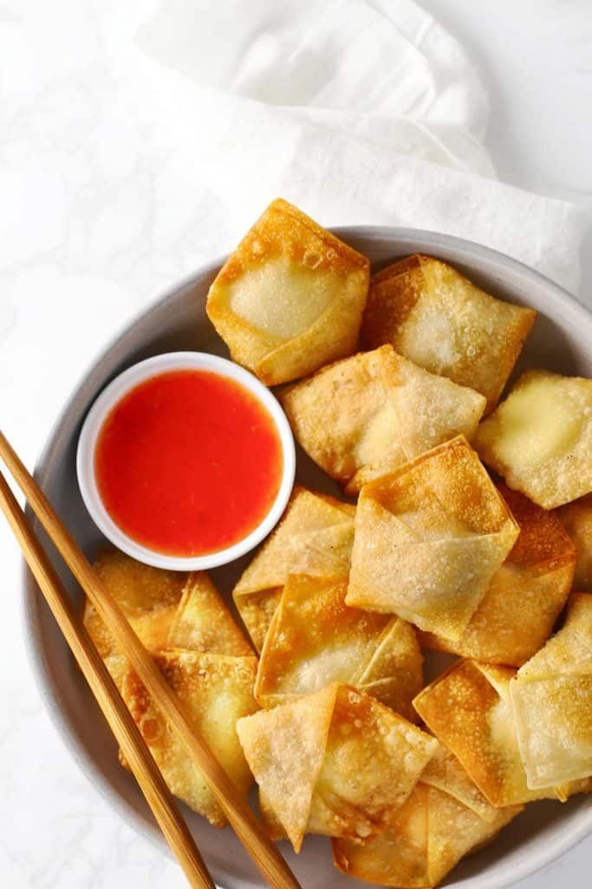

Cream Cheese Wontons

Delicious Crunchy and Creamy Wontons! The best entree type of snacks
Ingredients:
- 3 tablespoons honey
- 2 tablespoons low-sodium soy sauce
- 1 tablespoon Sriracha or other hot sauce
- 1 teaspoon vinegar or rice wine vinegar
- 1/4 teaspoon sesame oil
- 8 ounces cream cheese
- 1 tablespoon Sriracha or other hot sauce (more to taste)
- 2 green onions, light green and dark green parts, chopped
- 1 egg
- 24 wonton wrappers
- Vegetable oil, for frying
Steps:
- For the dipping sauce: Mix together the honey, soy sauce, Sriracha, vinegar and sesame oil in a small bowl and set aside.
- For the wontons: In the bowl of a mixer (or you can do it by hand), mix together the cream cheese, Sriracha and green onions until totally combined (scrape the mixer bowl if necessary). In a separate bowl, mix together the egg and 1/2 cup water.
- One at a time, assemble the wontons: Place approximately 1/2 teaspoon of the cream cheese mixture on one corner of a wonton wrapper. Use your finger to "paint" the egg wash all around the edges of the wrapper.
Roll the wrapper on a diagonal, starting with the cream cheese corner and stopping when half the wrapper is rolled and the cream cheese mixture is inside. Bring up the 2 ends and use the egg wash to stick them together.
Allow the remaining pointed end to naturally tuck backward. (The wontons should resemble tortellini.) As you work, place the assembled wontons under plastic wrap or a light towel to keep them from drying out.
- Heat 2 to 3 inches of vegetable oil in a large saucepan or medium skillet until a deep-fry thermometer inserted in the oil registers just under 350 degrees F. (You don't want the oil too hot or it will burn the wontons! Experiment with a spare sheet of wonton wrappers to check.)
- In batches of 4 or 5 at a time, fry the wontons for 45 seconds to 1 minute, flipping carefully midway through to make sure they brown evenly. Remove them when you think they still could stand to slightly brown a teeny bit more (because they will slightly brown in the seconds
after you remove them from the pan!). Drain the wontons on a paper towel. Repeat with the remaining batches.
- It's best to wait 5 to 10 minutes before serving the wontons, as the cream cheese filling can be quite hot. Serve with the dipping sauce.